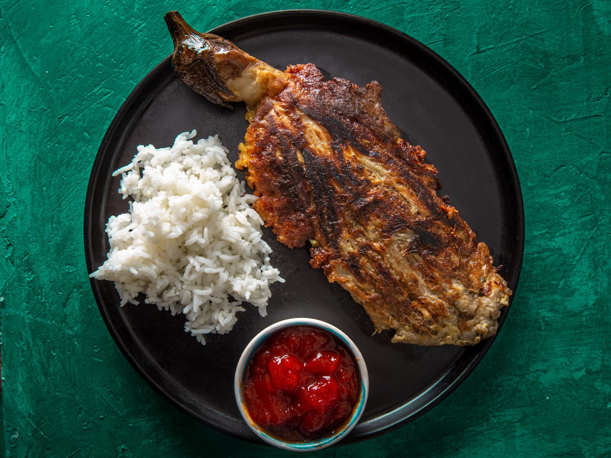

Tortang Talong

Description
One of my favorite childhood dishes, and delicious with a bowl of white rice, the tortang talong is a dish that can be eaten for breakfast, lunch, and dinner. A charred flavor complemented with the freshness of kalamansi (lime) and tomatos, it is a unique expression of a 'savory vegetable'.
Ingredients
- 4 medium eggplants
- 6 medium garlic cloves, minced
- 1 small yellow onion, finely chopped
- 4 tablespoons of vegetable oil
- 5 large eggs
- 1 lime, 1 tomato
- salt and black pepper
- soy sauce
- fish sauce
- Cooked white rice, serve alongside
- Ketchup or banana ketchup, serve alongside
Instructions
- Turn on the stove to medium heat. Poke four 1/2-inch slits in each eggplant. Roast the eggplants one-by-one ontop of the fire until the skin is chared and fully tender, offering little resistance when pierced with a knife.
- Peel eggplant discarding skin and stems. With a fork, pressdown firmly on each eggplant along its length until it looks like a large teardrop.
- Heat up large pan, add 2 tablespoons of oil on medium heat. Add onions and garlic and saute. Add soysauce, salt, black pepper, and fish sauce and stir until the seasonings are absorbed.
- In a medium bowl, beat all eggs and add the sauted mixture and mix.
- Clean pan, add oil and heat with medium flame.
- Dip the eggplants in bowl one-by-one and add into the frying pan
- Fry it up, add salt, pepper, soysauce, and fish sauce to taste.
- When cooked, move it to a place with white rice, ketchup on the side, and sliced limes and tomatoes.
- Enjoy!!